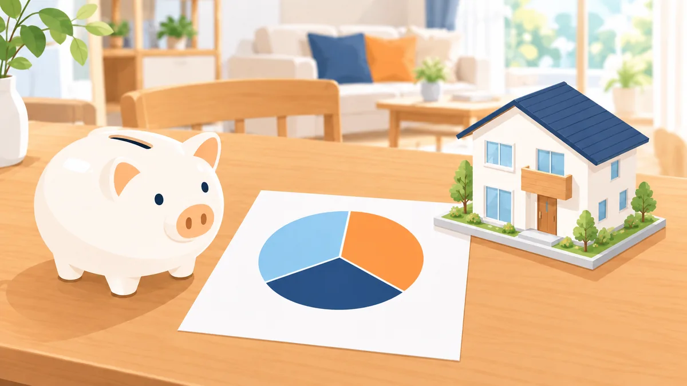

頭金がない場合の住宅購入の資金計画。何にいくら必要かを全部並べる

「頭金がないと家は買えない」と思っている方は多いですが、頭金がなくても住宅の購入を検討できる場合があります。ただし、頭金がない分、資金計画は慎重に組む必要があります。この記事は今週の親記事として、頭金がない場合に何にいくら必要か、どこに注意するかを全体像として整理します。各項目の詳しい説明は、今週これから公開する関連記事で扱います。
- 一般的な考え方の整理です。取り扱いの有無や条件は金融機関ごとに異なり、判断は金融機関が行います。
- 金額の例は考え方を説明するための仮のものです。
頭金がなくても検討できる理由
住宅ローンは、物件価格の全額を対象に検討できる商品が多くあります。以前は「物件価格の 2 割の頭金」が目安と言われましたが、現在は頭金なしで全額を借りる例も一般的です。金融機関が見るのは頭金の有無そのものより、年収に対する返済の割合（返済負担率）、収入の安定性、過去のお支払いの状況です。
一方で、頭金がないと借入額が大きくなり、毎月の返済額と総支払額が増えます。また、物件価格に加えて諸費用も借りる場合は、さらに条件が変わります。ここからは、必要な資金を項目ごとに並べていきます。
必要な資金の全体像
| 項目 | 内容 | 目安 | 住宅ローンに含められるか |
|---|---|---|---|
| 物件価格 | 土地・建物の代金 | ― | 含められる |
| 諸費用 | 登記費用、住宅ローンの手数料・保証料、火災保険、仲介手数料、印紙代など | 物件価格の 5〜10% 程度 | 金融機関により含められる場合がある |
| 引越し・家具家電 | 引越し費用、カーテン・照明・家電など | 数十万円〜 | 原則含められない（一部商品を除く） |
| 予備費 | 購入後の急な出費に備える手元資金 | 生活費の 3 か月分程度 | 含められない |
| 既存のお借入れの整理 | カードローンなどの返済資金 | 状況による | 一部の商品で含められる場合がある |
「頭金なし」で検討する場合でも、引越し・家具家電と予備費は手元資金が必要です。この 2 つを確保できるかが、頭金なしで進められるかの現実的な分かれ目になります。
計算例: 物件価格 3,000 万円、頭金なし
- 諸費用を 7% とすると約 210 万円。住宅ローンに含められる場合、借入額は 3,210 万円。
- 年 1.5%（適用金利の例）・35 年なら、毎月の返済額は約 9.8 万円。
- 返済負担率 35% で逆算すると、必要な年収の目安は約 340 万円。
- 手元資金として、引越し・家具家電に 50 万円、予備費に 60 万円、合計 110 万円程度を残す。
金融機関が返済負担率の計算に使う金利は、適用金利より高めに設定されることが多いため、実際にはこれより余裕が必要です。計算の考え方は 返済負担率の計算方法と年収別の目安 をご覧ください。
頭金がない場合に注意する 4 点
1. 毎月の返済と総支払額の両方を見る
借入額が大きい分、35 年間の総支払額は頭金がある場合より増えます。毎月の返済額だけで判断せず、総額でも無理がないかを確認します。
2. 手元資金を使い切らない
頭金に回す資金がないのに、既存のお借入れの完済に手元資金を使うと、予備費がなくなります。手元資金をどこに使うかは、金利の高いほうから、かつ予備費を残す範囲で、が原則です。
3. 諸費用を含める場合は条件を確認する
諸費用を住宅ローンに含められる金融機関でも、金利が上乗せされる、上限がある、といった条件が付くことがあります。
4. 家賃との比較で「返せる額」を決める
いま払っている家賃と、購入後の毎月の返済額（管理費・固定資産税などを含む）を並べて、無理のない範囲を決めます。上限いっぱいではなく、いまの家賃と同じか少し上の範囲に収めるのが現実的です。
既存のお借入れがある場合の組み立て方
頭金がなく、カードローンや車のローンもある場合は、返済負担率の計算に既存の返済額が入るため、借入額の目安が下がります。この場合の選択肢は、既存のお借入れを先に整理する、住宅の取得と合わせて既存のお借入れの返済資金を検討できる商品を使う、物件価格を見直す、の 3 つです。それぞれの考え方は 返済負担率が上限を超えたときの 5 つの調整方法 と 商品の型と条件の見方 をご覧ください。
今週の関連記事（公開予定）
- 諸費用の内訳と目安。何にいくらかかるか
- 家賃と住宅ローンの毎月の支払いを比較する方法
- 頭金ゼロで購入する場合の毎月の返済と総支払額の見方
- 手元資金をお借入れの整理と頭金のどちらに使うか
- 住宅ローン控除の対象になる部分とならない部分
- 物件価格の決め方。借入可能額と返せる額の違い